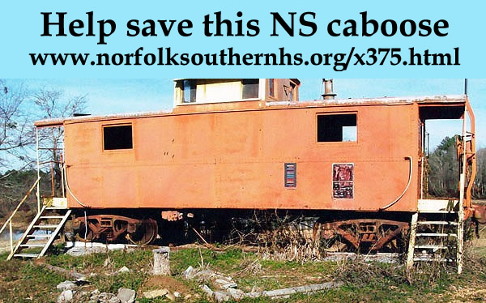

Copyright 2016
Norfolk Southern Historical Society,
All Rights Reserved
Help preserve the NS 375!

Save a piece of North Carolina history! This piece of
the old NS remains in caboose NS 375, currently in Alabama (near Atlanta,
GA), but now threatened with the scrapper’s torch! We at the NS Historical
Society and the Fuquay-Varina Museum feel a tangible piece of history
like this should be preserved, and believe you feel the same way. We have
therefore established the NS 375 Preservation and Restoration Fund. If
you are interested in seeing a real part of our railroad heritage preserved
for the enjoyment and education of your future generations, please send
a donation of any size to:
NS 375 Preservation and Restoration Fund
c/o Friends of the Museums
P. O. Box 2034
Fuquay-Varina, NC 27526
http://www.fuquay-varina-museums.org/
All donations are tax deductible. Please help us in this worthwhile cause,
and keep our common history alive.
For more current information, please Like our Facebook Page here: https://www.facebook.com/NS375